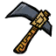
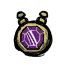
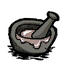
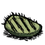
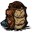

Nighmare Werepig

Nighmare Werepig is a boss found in the caves in the mug biome together with 3 pillares witch he is stuck with by chains he has 10000hp  , deals 75 damage
, deals 75 damage  with his lunge atack and 112.5 damage
with his lunge atack and 112.5 damage  with his slam atack, for both players and mobs, he also has a -400 sanity
with his slam atack, for both players and mobs, he also has a -400 sanity  loss while in combat
loss while in combat
Kiting pattern(for every atack)
Itens required to start the boss fight
1x  
Phase 0:
dodge, atack(only one time)
Phase 1:
Atack 1: dogde, dodge, dogde, 12 atacks
Phase 2:
Atack 2: bait, 3 atacks, back
Phase 3:
Atack 1: dodge, dodge, dodge, 12 atacks
Safe kiting pattern
Phase 0:
dodge, atack(only one time)
Phase 1:
Atack 1: dogde, dodge, dogde, 11 atacks
Phase 2:
Atack 2: bait, 2 atacks, back
Phase 3:
Atack 1: dodge, dodge, dodge, 11 atacks
Full gameplay loop
Explanation
every time you read dodge, in that case to this boss fight the way to dodge is in a diagonal going to his side, try always to position the camera in a way that he stays rushing to left to right or to right to left so all you have to do to dodge is to go down, up, or better yet in a diagonal to down or up and the oposite direction of where he is coming
Tanking Strategie
Itens required
4x    and to start the boss fight:
1x
1x
and to start the boss fight:
1x
1x
Full Gameplay loop
Explanation
Nightmare Werepig is one of if not the most hard boss to tank only and thats because he has a atack that knocks you back, that's why the only way to tank is using the Craggy Carapace, just press f using the itens metioned above, also since you are fighting him in the caves instead of the surface like in the exemple its recomendded to use at least 10 Healing Salve, 20 Cactus Meat Cooked and 1 more Craggy Carapace and not to mention a light source like a yellow staff or some campfires along the arena.